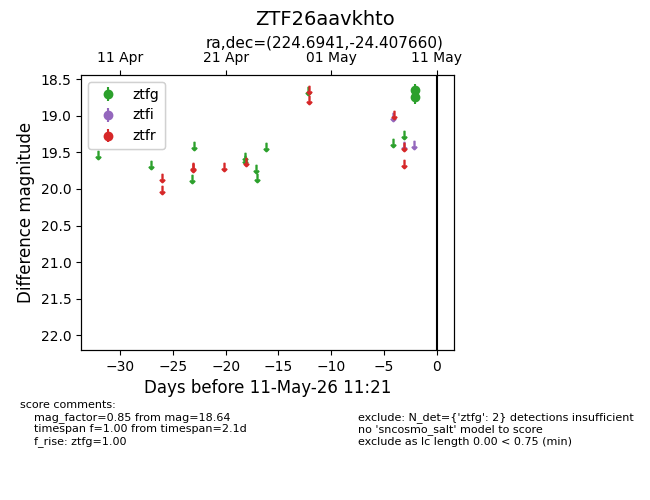
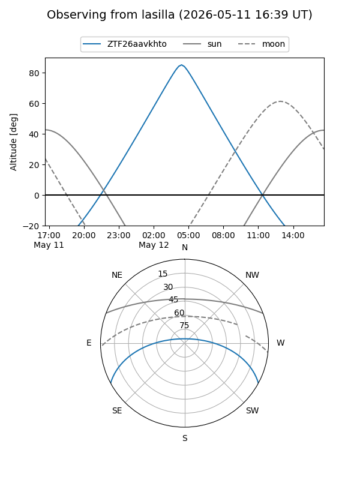
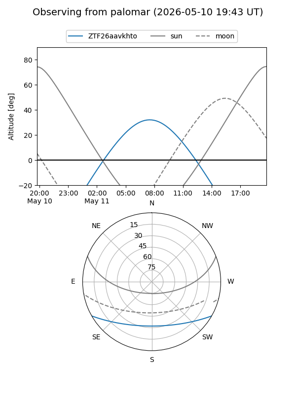

ZTF26aavkhto
Target ZTF26aavkhto at 2026-05-11 11:24
Aliases and brokers:
FINK: link
Lasair: link
ALeRCE: link
alt names
ZTF26aavkhto (ztf,fink_ztf)
Coordinates:
equatorial (ra, dec) = 224.6941,-24.40766
equatorial (HMS+DMS) = 14:58:46.59,-24:24:27.58
galactic (l, b) = (336.6204,+30.00736)
Flags:
Photometry:
last ztfg=18.64
2 ztfg detections
Lightcurve

Visibility


Additional plots